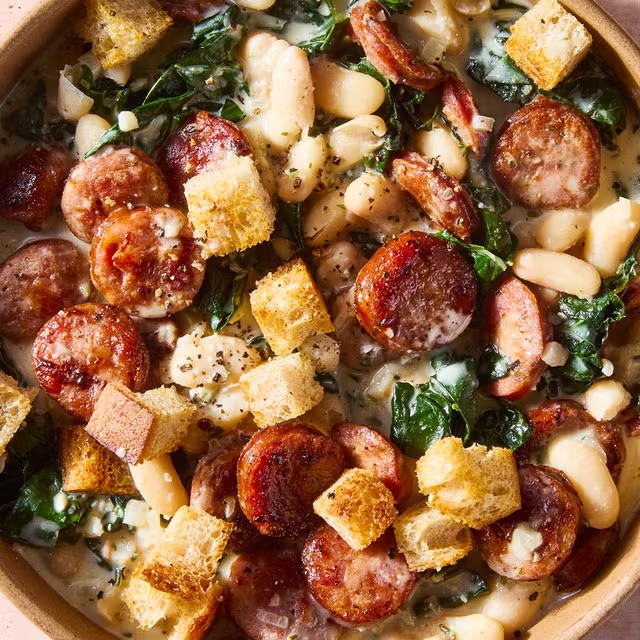

Home
White Bean & Smoked Sausage Skillet

This white bean and sausage skillet is poised to become your new favorite, proving that pork and beans are an unbeatable combination. This hearty skillet dinner, ready in just 30 minutes with minimal cleanup, is perfect for busy evenings.
It features seared smoked sausage in a creamy sauce made with shallots, garlic, chopped kale, and tender cannellini beans, all topped with crispy homemade mini croutons. You're guaranteed to want seconds!
Ingredients
- 2 slices sourdough bread, cut into 1/4" to 1/2" cubes
- 4 Tbsp. extra-virgin olive oil, divided
- Kosher salt
- Freshly ground black pepper
- 12 oz. smoked sausage (such as andouille or kielbasa), sliced 1/4" thick
- 1 shallot, finely chopped
- 1/2 bunch Tuscan kale, thick stems and ribs removed, chopped
- 3 oil-packed anchovy fillets, finely chopped (optional)
- 3 garlic cloves, finely chopped
- 1 Tbsp. fresh chopped sage or 1 tsp. dried sage
- 1 Tbsp. fresh chopped thyme or 1 tsp. dried thyme
- 1 cup low-sodium chicken broth
- 2 (14-oz.) cans cannellini beans, 1 drained, rinsed
- 1/2 (5.2-oz.) block Boursin cheese
Steps
- Step 1: Arrange a rack in center of oven; preheat to 375°. In a medium bowl, toss bread cubes, 1 Tbsp. oil, 1/4 tsp. salt, and a pinch of black pepper until coated. Transfer to a baking sheet.
- Step 2: Bake bread, tossing halfway through, until golden and crisp, 10 to 12 minutes. Let cool.
- Step 3: Meanwhile, in a large skillet over medium heat, heat 1 Tbsp. oil; swirl pan to coat. Add sausage in a single layer and cook, undisturbed, until starting to brown on one side, 3 to 4 minutes. Cook, turning pieces, until starting to brown, 3 to 4 minutes more. Transfer sausage to a plate.
- Step 4: In same skillet over medium heat, heat 1 Tbsp. oil. Add shallots; season with a pinch of salt. Cook, stirring occasionally, until starting to soften, 2 to 3 minutes. Add kale and cook, stirring frequently, until just starting to wilt, about 2 minutes more.
- Step 5: Push kale to make a small space in the center of skillet and add remaining 1 Tbsp. oil. Add anchovies (if using), garlic, sage, and thyme. Cook, keeping kale separate, until garlic is fragrant, about 2 minutes more. Add broth to deglaze pan and stir everything to combine.
- Step 6: Add beans, including liquid from 1 can. Bring to a simmer and cook, mashing a few beans, until sauce is thickened and warmed through, 5 to 7 minutes.
- Step 7: Stir in Boursin until melted. Return sausage to skillet and stir to combine; season with salt and pepper, if needed.
- Step 8: Divide bean mixture among bowls. Top with croutons.